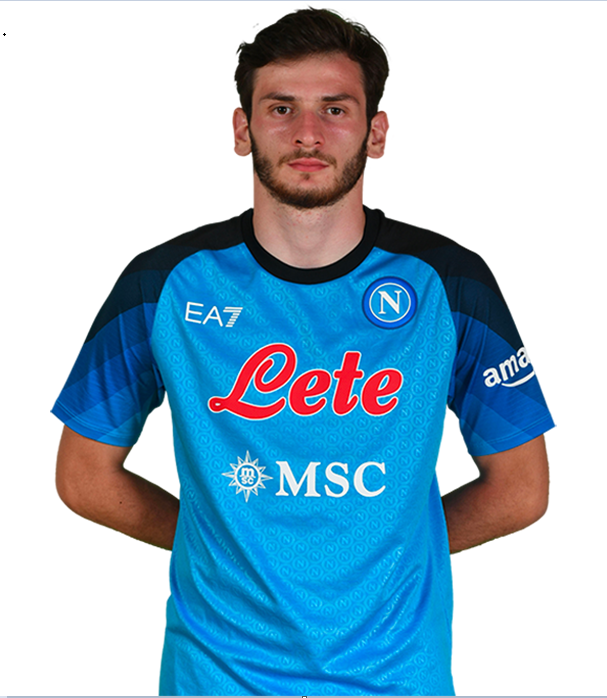

Personal Information
Name: Khvicha Kvaratskhelia
Birthdate: October 8, 1996
Nationality: Georgian
Height: 185 cm (6 feet, 1 inch)
Position: Winger | #9
About The Player
Khvicha Kvaratskhelia is a Georgian professional footballer who currently plays as a left winger and forward for the Russian club Rubin Kazan and the Georgian national team. He was born on October 8, 1996, in the Georgian capital of Tbilisi. Kvaratskhelia began his professional career with the Georgian club Saburtalo Tbilisi before moving to Rubin Kazan in 2020. He quickly established himself as one of the team's key players, impressing fans and pundits with his technical ability, dribbling skills, and eye for goal. Kvaratskhelia has represented Georgia at the under-17, under-19, and senior levels and has become one of the team's most important players in recent years. At only 24 years old, he is considered one of the brightest young talents in Georgian football and has a promising future ahead of him.
| Statistics in All Competetions | |
|---|---|
| Appearances | 32 |
| Minutes Played | 2405 |
| Goals Scored | 14 |
| Penalties Scored | 3 |
| Assists | 14 |
| Total Shots | 75 |
| Successful Dribbles | 69 |
| Yellow Cards | 0 |
| Red Cards | 0 |